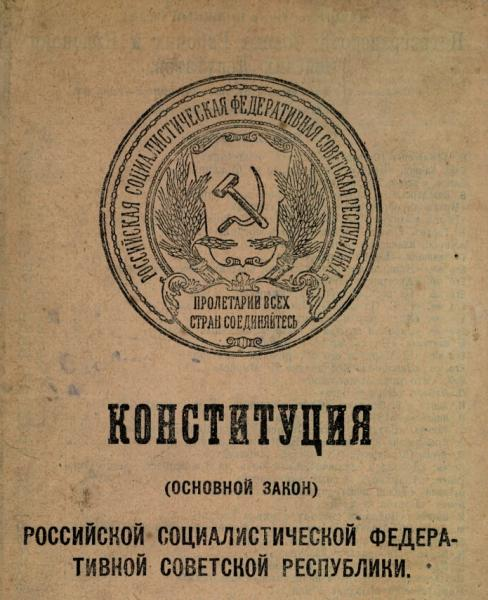
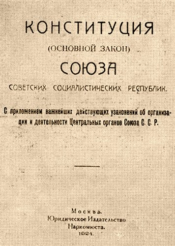
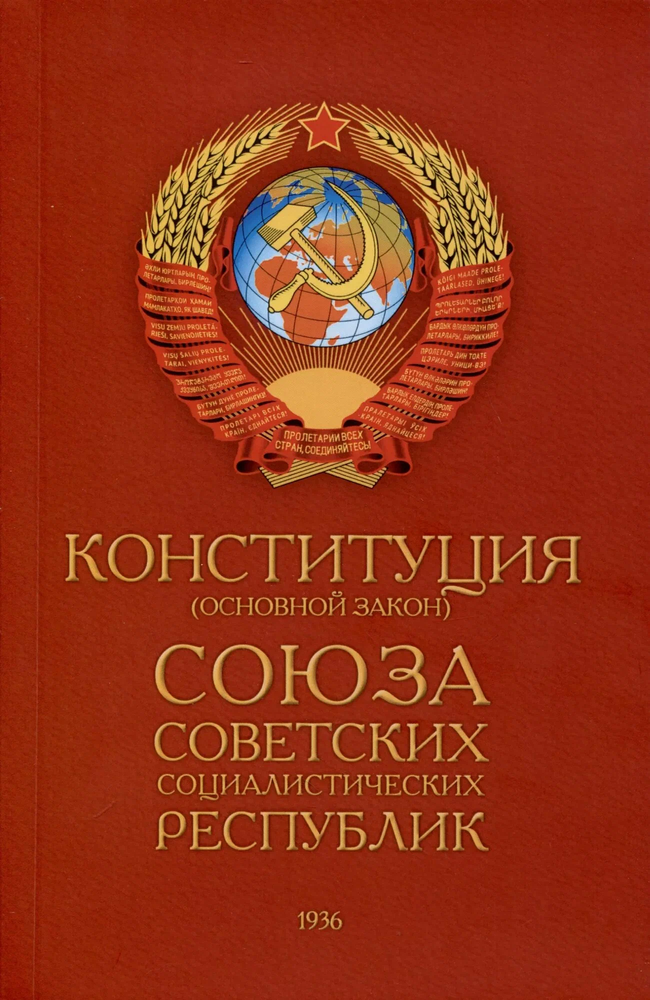
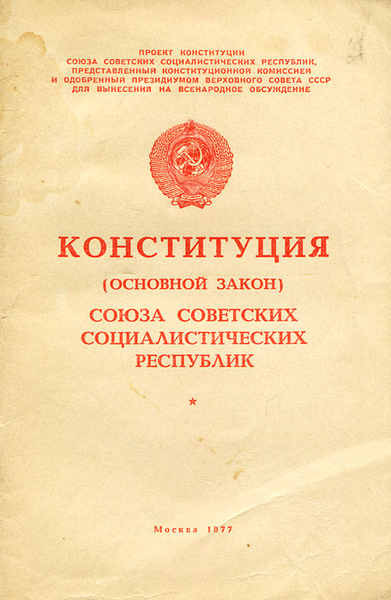

Архив документов
Исторические документы
Конституций России
Полное собрание текстов конституций и основных государственных законов России с подробными комментариями и анализами
Архив конституций
Все исторические документы в хронологическом порядке

Основные государственные законы 1906 года
Принято: 23 апреля 1906 года
Первая российская конституция, установившая основы конституционной монархии и создавшая Государственную Думу.
Основные особенности:
- Создание Государственной Думы
- Разделение власти между императором и парламентом
- Провозглашение гражданских свобод
- Сохранение широких полномочий императора

Конституция РСФСР 1918 года
Принято: 10 июля 1918 года
Первая советская конституция, установившая диктатуру пролетариата и новую государственную систему.
Основные особенности:
- Установление диктатуры пролетариата
- Создание системы Советов
- Отмена частной собственности на землю
- Лишение политических прав "эксплуататорских классов"

Конституция СССР 1924 года
Принято: 31 января 1924 года
Первая конституция Советского Союза, закрепившая федеративное устройство нового государства.
Основные особенности:
- Закрепление создания Союза ССР
- Разграничение полномочий между Союзом и республиками
- Создание общесоюзных органов власти
- Установление верховенства союзных законов

Конституция СССР 1936 года
Принято: 5 декабря 1936 года
"Сталинская конституция", провозгласившая построение социализма в стране.
Основные особенности:
- Провозглашение построения социализма
- Введение всеобщего равного избирательного права
- Расширение прав и свобод граждан
- Закрепление руководящей роли ВКП(б)

Конституция СССР 1977 года
Принято: 7 октября 1977 года
"Брежневская конституция" периода развитого социализма.
Основные особенности:
- Провозглашение общенародного государства
- Введение новой главы о внешней политике
- Расширение социальных прав граждан
- Закрепление руководящей роли КПСС

Конституция РФ 1993 года
Принято: 12 декабря 1993 года
Действующая конституция Российской Федерации, основа современного конституционного строя.
Основные особенности:
- Провозглашение России демократическим правовым государством
- Разделение властей на три ветви
- Признание прав и свобод человека высшей ценностью
- Гарантия местного самоуправления